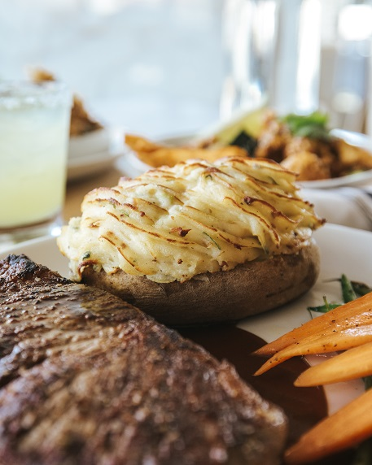

Baked Potato

Description
This a great side dish that will fill you up and give you
much needed starches and nutrients. Yum!
Ingredients
- 4 small russet potatoes
- 2 tablespoons extra-virgin olive oil
- 1 teaspoon kosher or sea salt, plus for seasoning
- Freshly ground black pepper
- 1 bunch chives (about 1-ounce)
- 1/2 cup sour cream
- 4 tablespoons unsalted butter
- 2 slices bacon, cooked crispy, and crumbled, optional garnish
Steps
- Preheat the oven to 400 degrees F.
- Toss the potatoes in a bowl with the oil, salt, and pepper until
completely coated. Place on a baking sheet and bake until fork
tender, about 45 minutes.
- Meanwhile, bring a small pot of water to a boil and salt it
generously. Fill a medium bowl with ice water. Put the chives
in the boiling water and cook until bright green, about 30 seconds.
Immediately, plunge into the ice water to set the color. Squeeze
all the water out of the chives and give them a rough chop. Put into
a blender with the sour cream. Pulse until you have a smooth green
sauce and season with salt and pepper, to taste. Chill until ready to
serve. (Or, thinly slice the chives and stir into the sour cream,
season with salt and pepper, to taste.)
- Cut the potatoes lengthwise and then across. Pinch and press the sides
to open the potatoes. Divide the butter among the potatoes and serve
with the sour cream. Garnish with crumbled bacon if desired.
Source